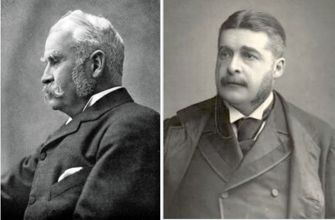

The origins of contemporary Musical Theatre
Although story through music as a concept has been around since ancient times, the idea of contemporary musical theatre only came about around the 19th century, with many structural elements established by the light opera works of Jacques Offenbach in France, Gilbert and Sullivan in Britain and the works of Harrigan and Hart in America. These were followed by Edwardian musical comedies, which emerged in Britain, and the musical theatre works of American creators like George M. Cohan at the turn of the 20th century.
What defines "Musical Theatre" as a genre?
Overall, musical theatre is not exactly a genre, so my title is a little bit clickbait - Musical theatre songs are generally distinct because they prioritise storytelling and serving narrative purpose. Usually, a musical theatre song (or showtune) is developed to enhance moments in the musical’s story. Musicals can exist wherein the songs were pre-existent, though they are known as Jukebox Musicals due to their lack of original music pieces.
How do you tell story through music?
Telling stories through music is actually quite simple, as it is exactly what it says on the tin. Basically, to tell story through music, you must treat the musical score itself like another language that the story is being told through. As a writer, when you write songs, you need to use them to punctuate things such as character moments (e.g. The Room Where It Happens (Hamilton), Disappear (Dear Evan Hansen), etc) and/or specific important points in the narrative (e.g. Storm (Epic The Musical), Candy Store (Heathers), etc.). The song must be carefully written to be relevant to the plot without just being a blank description of what the characters are doing or thinking or saying. A balance must be struck between musical structure and screenwriting.